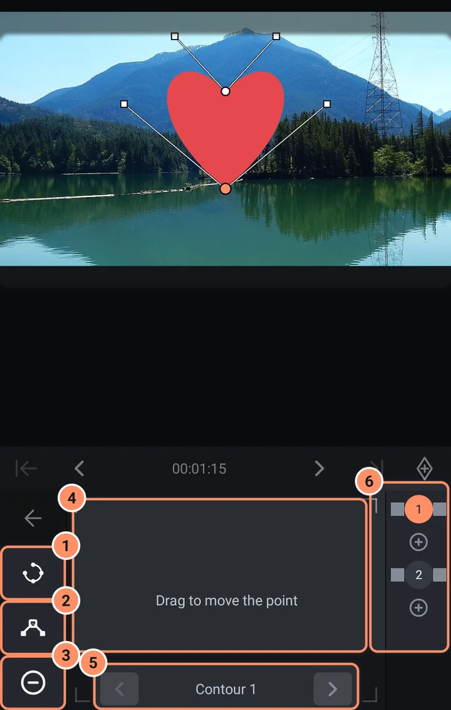

Vormen, tekenen en maskers
Vormen, het pengereedschap, vrij tekenen, SVG importeren, uitknipmaskers, groepen, bovenliggende lagen en geanimeerde vormmaskers.
Op deze pagina
Vormen
Voeg een kant-en-klare vorm toe via het tabblad Vorm van het menu Toevoegen. Selecteer de vorm en tik op Vormopties om hem aan te passen. Elke optie kun je animeren met keyframes.
- Afgeronde hoeken staat bovenaan en rondt elke hoek van de vorm af. Afgeronde rechthoek, Toelichting en Postzegel gebruiken hier hun eigen hoekradius.
- Grootte stelt de breedte en hoogte in.
- Daarna volgen de opties van die vorm, zoals de tanden van een Tandwiel, de inkeping en punt van een Hart, de rand, camera en zijknoppen van een Telefoon, of de rand, kop en het raster van een Paneel. Aantallen zoals tanden, stralen of punten veranderen in hele stappen.
- Geavanceerd opent de minder gebruikte opties, zoals de boog van een Ring of de kolommen en rijen van een Paneel.
Punten bewerken in het gereedschapsraster zet de vorm om in punten die je kunt verplaatsen, met het uiterlijk dat hij op dat moment heeft. Afgeronde hoeken blijft werken, en met Ongedaan maken krijg je de opties terug. Zijn er opties geanimeerd, dan vraagt de app het eerst. Omzetten naar contour in het laagmenu doet hetzelfde. Vormen die je met het pengereedschap tekent of uit SVG importeert, hebben Punten bewerken als hoofdgereedschap; hun Vormopties bieden Afgeronde hoeken.
Oudere versies van AbsentMotion tonen deze vormen zoals ze er aan het begin van de laag uitzien, zonder de opties.
Kleur en contour stel je in met Vulling en kleur en Rand en schaduw. Zie Laagtools.
Het pengereedschap en Punten bewerken
Pengereedschap in het menu Toevoegen maakt een nieuwe vormlaag en opent de punteditor. Punten bewerken in het gereedschapsraster opent die editor voor een bestaande padvorm. Tik in het voorbeeld om een punt te plaatsen; houd ingedrukt en sleep om een curvehendel uit te trekken. Een spookpunt laat zien waar het volgende punt komt. Ga je weg zonder iets te tekenen, dan verdwijnt de nieuwe laag.
Onderaan de editor:
- Pad sluiten of Pad openen (vanaf twee punten).
- Punt gebogen maken of Punt scherp maken.
- Punt toevoegen en Punt verwijderen.
- Een trackpad dat het geselecteerde punt verplaatst ("Sleep om het punt te verplaatsen"). Bewerk je een hendel van een vloeiend punt, dan zetten de schakelaars Hoek en Afstand de hoek of de lengte ervan vast.
- Contour met pijlen springt tussen de losse subpaden van een vorm.
- Rechts een lijst met de punten, met kleine "+"-vakjes ertussen om een punt in te voegen.

Bovenaan staan Ongedaan maken, Opnieuw en Terug.
Geanimeerde vormen (vormkeyframes)
In de punteditor zit een tijdbalk met Vorige vormkeyframe, Volgende vormkeyframe, Vormkeyframe toevoegen en Vormkeyframe verwijderen. Een vormkeyframe bewaart de hele vorm op de plek van de afspeelkop. Ga naar een ander moment, verplaats de punten en voeg nog een keyframe toe: de vorm animeert dan tussen de twee. Het vorige keyframe zie je als een vage stippellijn, zodat je alles makkelijk uitlijnt. Zo maak je een geanimeerd masker voor rotoscopie: trek een omtrek rond iets in een video en pas die aan terwijl de video beweegt.
Vrij tekenen
Vrij penseel in het menu Toevoegen maakt een tekenlaag en opent de tekeneditor.
- Pen tekent een gelijkmatige lijn, Penseel past de lijndikte aan op de druk, Vullen maakt van een getekende lus een gevulde vorm en Gum wist delen weg.
- Een schuifregelaar voor de grootte (1 tot 300) en een kleurkiezer met een kleurtoonstrook en een dekkingsstrook.
- Ongedaan maken en Opnieuw bovenaan. Elke lijn wordt bewaard zodra je je vinger optilt.
- Het gereedschap, de grootte en de kleur worden onthouden. Ga je weg zonder iets te tekenen, dan verdwijnt de nieuwe laag.

Tekeningen hebben geen keyframes. Wil je een tekening animeren, gebruik dan effecten zoals Tekenvoortgang; zie de effectenbibliotheek.
SVG-bestanden
SVG importeren in het menu Toevoegen zet een vectorafbeelding om in vormen. In Het menu Toevoegen lees je wat er bewaard blijft.
Maskers en uitknippen
- Uitknipmasker maken (laagmenu) knipt een laag uit op de vorm van de laag direct eronder. Uitknipmasker opheffen maakt dat ongedaan. In de tijdlijn heeft een uitgeknipte laag aan het eind van zijn rij een klein haakpijltje dat omlaag wijst naar de laag waarop hij is uitgeknipt.
- Groeperen en maskeren en Groeperen en uitsluiten (meervoudige selectie) groeperen lagen en zetten de overvloeimodus van de bovenste laag op Masker of Uitsluiten. Je kunt de overvloeimodus Masker of Uitsluiten ook bij elke laag instellen in Dekking. Masker laat de inhoud eronder alleen zien waar de laag is; Uitsluiten snijdt die juist weg.
- Geanimeerde maskers maak je met vormkeyframes (zie hierboven).
- Achtergrond verwijderen voor foto's en video's staat in AI-tools.

Groepen en bovenliggende lagen
- Groeperen (meervoudige selectie) zet lagen samen in één groepslaag. Je kunt de groep dan als geheel verplaatsen, schalen, laten faden en effecten geven. Zie Laagmenu's en meerdere lagen selecteren.
- Met een bovenliggende laag (de koppelknop in de bovenbalk) volgt de ene laag de andere, zonder te groeperen. De Beweging-effecten Koppelhulp en Schaalhulp veranderen hoe een onderliggende laag zijn bovenliggende laag volgt: zie Effecten gebruiken.
- Een Null-laag (Toevoegen, Object / asset) is onzichtbaar. Maak hem de bovenliggende laag van andere lagen om ze allemaal tegelijk te verplaatsen, of laat bewegingstracking hem bewegen.
Een groep bewerken
Selecteer een groep en tik in het gereedschap op Groep bewerken om hem te openen. Binnen de groep tonen de tijdlijn en het voorbeeld alleen de lagen van die groep, en die pas je aan zoals elke andere laag. Je kunt ook een groep in een groep openen.
- De bovenbalk laat zien waar je bent: de projectnaam en dan de naam van elke geopende groep. Tik op de projectnaam om terug te gaan naar het hele project, of op de naam van een groep om terug te gaan naar die groep.
- Is er een laag geselecteerd, dan staat naast de laagnaam een klein label met de naam van de groep. Tik erop om de groep te verlaten.
- Is er niets geselecteerd, dan verlaat je met de Terug-knop van je telefoon de groep waarin je zit.
- Het tandwiel opent de instellingen van de groep waarin je zit. Er is één instelling, Timing aanpassen: zie hieronder.
Een groep die aan een asset gekoppeld is, opent in plaats daarvan met Asseteigenschappen. Wil je de lagen ervan aanpassen, open dan de oorspronkelijke asset of kies eerst Ontkoppelen van asset (zie Assets, sjablonen en voorinstellingen). Een video-uitsnede die met Achtergrond verwijderen (video) is gemaakt, kun je niet openen.
De timing van een groep aanpassen
Timing aanpassen bepaalt wat er speelt als de groepsclip langer of korter is dan de lagen erin. Open de groep (Groep bewerken), tik op het tandwiel en kies:
- Uit (standaard): de lagen spelen op hun eigen snelheid en stoppen waar ze eindigen.
- Bevriezen: het laatste frame van het middenstuk blijft in beeld.
- Uitrekken: de lagen gaan langzamer of sneller, zodat ze de groepsclip precies vullen.
- Lus: de lagen beginnen opnieuw vanaf het begin.
- Herhalen en uitrekken: de lagen herhalen een heel aantal keer en worden een beetje uitgerekt, zodat ze de clip precies vullen.
- Leeg: na het einde van de lagen is er niets te zien.
Binnen een groep heeft het menu voor kopiëren en plakken ook Einde intro instellen en Begin outro instellen. Die zetten gouden vlaggetjes op de liniaal: het stuk vóór het einde van de intro en na het begin van de outro houdt zijn echte snelheid, terwijl het middenstuk wordt uitgerekt, herhaald of bevroren.

Wil je liever één gekozen frame van de groep tonen, gebruik dan Frame in het gereedschap: zie Laagtools.
Groep opheffen
Groep opheffen in het laagmenu van een groep zet de lagen terug in het project, op hun oude plek in de tijd en in beeld. Heeft de groep eigen effecten, snelheid, dekking of overvloeiing, dan waarschuwt de app eerst dat die verdwijnen. Met Ongedaan maken krijg je de groep terug.